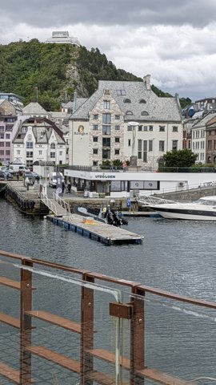
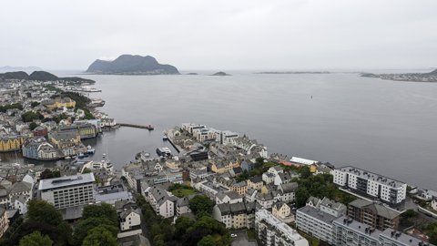
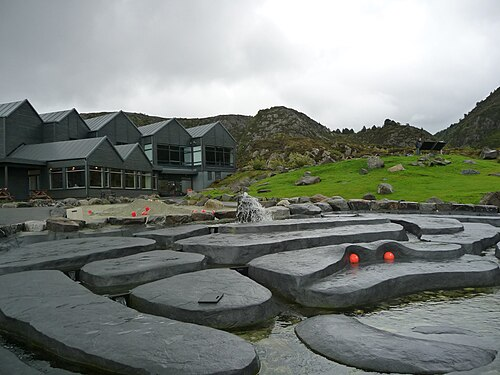

This map shows 15 of the most-searched sights in Ålesund as photo spots, ranked by how often people search for them: Brosundet, Fjellstua, Atlanterhavsparken, Sunnmøre Museum and Molja Lighthouse lead the list. Every spot has a pin on the subject and a phone icon showing where to stand, with tips for shooting it on your phone: which lens to use, how to frame it, a settings tip and the best time of day. Directions and Navigate buttons take you to the standing point on foot or by public transport. 3 spots are free to view; the full map is for members.
The 3 free photo spots
1Brosundet canal

Brosundet is a canal in Ålesund, and it is the first stop on this map. It can work well for phone photos because water, buildings and boats make natural subjects for a simple picture. If the water is calm, you may get a soft reflection, which can make a simple picture look more interesting. The best approach is to take one wide shot to show the whole scene, then a few closer ones of details that catch your eye. Turn on the gridlines and line the edge of the water or a row of buildings up with one of them, so the picture looks straight and tidy. Take a moment to check that nothing, such as a bag or bicycle, is cutting into the edge of the frame. If people walk through your shot, wait a few seconds for a gap, or use them to add a sense of life. If the water is rippled, the reflections will break up, so try a couple of frames a few seconds apart and keep the best one.
Where it is: Brosundet is a canal in Ålesund.
Shooting it on your phone
Lens: Start with the default lens (1x) for a natural view of the canal. Switch to the ultra-wide (0.5x) if you are close to the water and want more of the scene in the frame. Use the telephoto (2x-5x, depending on your phone) for details.
Where to stand: Stand about 35 m south of the subject, at the phone icon on the map, and face north.
Framing: Switch on the gridlines and line the edge of the water or a row of buildings up with one of the horizontal lines. Hold the phone level so the buildings do not lean. Take a wide shot first, then move closer for details. Keep a little water in the lower part of the frame if you want reflections.
Settings tip: Tap the water or the buildings to focus, then drag the exposure slider down a touch if the sky is bright, so the colours stay rich. If your phone offers Live Photos or motion, try it if something is moving on the water, then pick the best frame.
Best time: Soft light early or late in the day is often flattering for photos. Pick a still day for the best reflections.
2Fjellstua viewpoint on Mount Aksla

Fjellstua is a viewpoint on Mount Aksla, on the Ålesund map, and it is ranked second on this map. From a high viewpoint like this, a phone photo can give a clear sense of place, with the landscape stretching out in front of you. Use the building as an anchor, then turn to take in the view from the viewpoint. For the wide scene, switch to the ultra-wide lens (0.5x) and keep the horizon level using the gridlines. If you want a tighter picture of one part of the scene, use the telephoto/zoom lens (2x-5x, depending on your phone). Check the edges of the frame for railings, signs and other visitors before you press the shutter. Walk a little way along the viewing area to find a cleaner line of sight. Haze or low cloud can flatten the view, so take a second shot with the exposure slider pulled down slightly to keep the sky from washing out.
Where it is: Fjellstua is a viewpoint on Mount Aksla, on the Ålesund map. The map marks the Fjellstua restaurant at the viewpoint.
Shooting it on your phone
Lens: Start with the ultra-wide lens (0.5x) for the wide view. Use the default lens (1x) for the Fjellstua building and for people-free details. Switch to the telephoto/zoom lens (2x-5x, depending on your phone) to pick out single details in the distance.
Where to stand: Stand about 10 m west of the subject, at the phone icon on the map, and face east. Take your photo of Fjellstua from here, then turn to take in the view from the viewpoint.
Framing: Turn on the gridlines and place the horizon on the upper or lower line, depending on whether the landscape or the sky matters more. Keep railings and signs at the edge of the frame or out of it. For a sweeping view, try panorama mode, moving slowly and keeping your phone level.
Settings tip: Tap on your main subject to set focus, then drag the exposure slider down a little if the sky looks too bright. If the wind is blowing, hold the phone with both hands and keep your elbows tucked in.
Best time: Late afternoon or evening usually gives softer light, but any clear time of day works. Take a quick look at the weather before you set out, as cloud can hide the view.
3Atlanterhavsparken aquarium

Atlanterhavsparken (the Atlantic Sea-Park) is one of Scandinavia's largest saltwater aquariums, built into the coastline of the Tueneset peninsula. For photos, the best part is outdoors. The open-air seal pool, called Selbukta, opened in 2014 and holds around 15 million litres of water, making it one of the largest seal exhibits in the world. It houses harbour seals. From the edge of the pool you can frame seals, or sometimes otters, with the fjord and the mountains behind them. That backdrop is what sets this aquarium apart from ones where every picture is taken through indoor glass.
The aquarium was founded in 1951 and the current building opened on 15 June 1998, during the city's 150th anniversary. Besides the seal pool there are 11 larger landscape tanks, including two open touch pools, and about 6,000 square metres of outdoor space.
For phone photos, start at the outdoor seal pool area and let the animals come to you. Seals move around a lot, so take several frames rather than one. Keep the horizon level using your gridlines, and try one wider shot that includes the water, the far shore and the peaks. An alternative is the pool seen from its underwater walkway or along its edge, with the sea right beside the basin. Entry is to the aquarium itself, so check the official site before you go.
Where it is: Atlanterhavsparken sits on the Tueneset peninsula, on the coast about 3.5 kilometres west of Ålesund town centre. It looks out over the sea and the coastal islands.
Shooting it on your phone
Lens: Use the default lens (1x) for the main picture of seals with the fjord and peaks behind them. Switch to telephoto (2x-5x, depending on your phone) for close portraits of a seal or otter at the pool edge. The ultra-wide (0.5x) suits the open sea and rocky shoreline, but keep it away from the edges of the frame where faces can stretch.
Where to stand: Stand right at the subject (outdoor seal pool area facing the fjord and mountains). Seals or otters at the edge of the open-air pool, with the fjord and snowy peaks behind them.
Framing: Put the animal on one third of the frame and let the water and mountains fill the rest, using the gridlines to keep the horizon level. For variety, try the seal pool from its underwater walkway or along its edge, with the sea right beside the basin. If you have time to spare, the open sea and rocky shoreline around Tueneset make a calmer outdoor alternative to the tanks.
Settings tip: Tap on the animal to focus, then drag the exposure slider down a little so the sky and mountains keep their detail. Use Live Photos or take several shots in a row, because seals rarely stay still. Flash may be restricted in some areas, so turn it off.
Best time: Choose a bright, clear day so the mountains show behind the pool, and check the official site for show and feeding times.
12 more spots for members
These spots are on the map as grey numbered pins. Where to stand, the phone tips, photos and directions for them come with Explorer membership.
- 4Sunnmøre Museum · members
- 5Molja Lighthouse · members
- 6Ålesund Church · members
- 7Slinningsodden view of the town · members
- 8Alnes Lighthouse · members
- 9Giske Church (the marble chapel) · members
- 10Jugendstilsenteret (Art Nouveau Centre) · members
- 11Skateflukaia waterfront · members
- 12Apotekertorget · members
- 13Byparken and the Kaiser Wilhelm statue · members
- 14Kongens gate Art Nouveau facades · members
- 15Borgund Church · members
Get every spot with Explorer membership
Explorer opens every spot on every map in the library: where to stand, how to frame it on your phone and how to get there, plus the Xdatrys Maps app with maps saved on your phone for use without signal. $9.99 a month or $59.99 a year; cancel any time.
Join Explorer Compare free and Explorer
Not ready to join?
Get Pocket Lens, our free daily smartphone travel photography newsletter.
Free, and you can unsubscribe at any time. If the form does not show, sign up on our newsletter page.
Questions
What are the top photo spots in Ålesund?
The first three on this map are Brosundet, Fjellstua and Atlanterhavsparken. They are ranked by how often people search for them. The full map has 15.
Where should I stand to photograph Brosundet?
Stand about 35 m south of Brosundet, at the phone icon on the map, and face north. Start with the default lens (1x) for a natural view of the canal.
When is the best time to photograph Fjellstua?
Late afternoon or evening usually gives softer light, but any clear time of day works. Take a quick look at the weather before you set out, as cloud can hide the view.
How do I get to Atlanterhavsparken?
No tram or train stops are listed near the park, so head west out of Ålesund town centre; the park is roughly 3 to 3.5 kilometres away, so check local transport options.
Credits
Map data © OpenStreetMap contributors (ODbL); base map built with Protomaps from OpenStreetMap data. Photos from Wikimedia Commons, credited under each photo with their licence. Background reading for the free spots: Atlantic Sea-Park (Wikipedia, CC BY-SA). Access rules and opening times change: check before you go.